<!DOCTYPE html>
<html lang="en">
<head>
<meta charset="UTF-8">
<meta name="viewport" content="width=device-width,initial-scale=1">
<title>Answers — Appendix</title>
<meta name="description" content="Class 6 Mathematics · Term 3 · Appendix · Answers">
<link rel="icon" href="data:image/svg+xml,<svg xmlns='http://www.w3.org/2000/svg' viewBox='0 0 100 100'><text y='.9em' font-size='90'>📘</text></svg>">
<link rel="stylesheet" href="../../../assets/book.css">
<link rel="stylesheet" href="https://cdn.jsdelivr.net/npm/katex@0.16.11/dist/katex.min.css" crossorigin="anonymous">
</head>
<body>
<header class="topbar">
<div class="topbar-in">
  <div class="crumb">
    <span class="c1"><a href="../../../index.html">Library</a> · <a href="../../index.html">Class 6 Mathematics · Term 3</a></span>
    <span class="c2">Appendix · Answers</span>
  </div>
  <a class="tb-btn" data-nav="prev" href="../../90-appendix/00-front-matter/index.html" title="Front Matter">←</a>
  <details class="drawer"><summary class="tb-btn" title="Sections in this chapter">☰</summary>
<div class="drawer-panel"><div class="dh">Appendix</div><a href="../00-front-matter/index.html">Front Matter</a><a href="../answers/index.html" aria-current="page">Answers</a><a href="../mathematical-terms/index.html">Mathematical Terms</a></div></details>
  <a class="tb-btn" data-nav="next" href="../../90-appendix/mathematical-terms/index.html" title="Mathematical Terms">→</a>
  <button class="tb-btn" data-theme-toggle title="Toggle light / dark" aria-label="Toggle light or dark theme">◐</button>
</div>
<div class="progress"><span style="width:97.8%"></span></div>
</header>
<main class="wrap">
<div class="sec-head">
  <p class="eyebrow"><a href="../index.html">Appendix · Appendix</a></p>
  <h1>Answers</h1>
  <p class="sec-meta">11 figures</p>
</div>
<article class="prose">
<h3 id="s-chapter-1-fractions-exercise-1-1">Chapter 1 Fractions Exercise 1.1</h3>
<ul class="qlist">
<li><span class="mk">1.</span><span class="lt">i) 14 14 ii) Mixed Fraction iii) 2 16 iv) 16 v) 1</span></li>
<li><span class="mk">2.</span><span class="lt">i) True iii) True iv) True v) False</span></li>
<li><span class="mk">3.</span><span class="lt">i) \(\frac{10}{21}\) ii) \(\frac{ii)\) False}{2} 7 1 iii) \(7 \frac{6}{35}\) iv) \(\frac{38}{63}\) v) \(\frac{11}{15}\) vi) \(4 \frac{2}{21}\)</span></li>
<li><span class="mk">4.</span><span class="lt">i) \(\frac{61}{18}\) ii) 14 1 iii) 7 56 iv) \(\frac{109}{9}\)</span></li>
<li><span class="mk">5.</span><span class="lt">i) 4 ii) \(41 2 \frac{7}{3}\) iii) \(\frac{3}{10}\) iv) 4</span></li>
<li><span class="mk">6.</span><span class="lt">i) \(\frac{3}{28}\) ii) 2 25 iii) \(1 \frac{3}{25}\) iv) 5 45</span></li>
<li><span class="mk">7.</span><span class="lt">\(5 \frac{1}{2}\) kg 8. \(1 \frac{1}{4} l 9\). 15 34 km 10. 7</span></li>
</ul>
<p>\(11.d) \frac{109}{1110} &lt; 12\). a) \(\frac{13}{63} 13\). c) \(\frac{17}{53} 14\). a) 42 15. c) \(\frac{4}{5}\) of 150</p>
<h3 class="callout-h" id="s-exercise-1-2">Exercise 1.2</h3>
<ul class="qlist">
<li><span class="mk">1.</span><span class="lt">510 2. \(3 \frac{1}{4}\) km 3. The difference between \(2 \frac{1}{2}\) and 3 23 is smaller 4. 10 18 kg</span></li>
<li><span class="mk">5.</span><span class="lt">22 steps 6. \(\frac{4}{8}\) &amp; many answers 7. 3 23 8. \(6 \frac{8}{35} 9\). \(2 \frac{7}{12}\)</span></li>
<li><span class="mk">10.</span><span class="lt">3 11. \(\frac{111}{203020}\) , , 12. \(\frac{1}{8} 13\). 15</span></li>
<li><span class="mk">14.</span><span class="lt">i) \(4 \frac{1}{4}\) km ii) 5 34 km iii) Via Bus Stand iv) 6 times</span></li>
</ul>
<h3 id="s-chapter-2-integers-exercise-2-1">Chapter 2 Integers Exercise 2.1</h3>
<ul class="qlist">
<li><span class="mk">1.</span><span class="lt">i) \(- 100\) ii) \(- 7\) iii) left iv) 11 v) 0</span></li>
<li><span class="mk">2.</span><span class="lt">i) True ii) False iii) False iv) False v) True</span></li>
</ul>
<p>3.</p>
<p>-6 -5 -4 -3 -2 -1 0 1 2 3 4 5 6</p>
<ul class="qlist">
<li><span class="mk">4.</span><span class="lt">i) \(- 3\) ii) \(- 2\)</span></li>
<li><span class="mk">5.</span><span class="lt">i) \(- 44\) ii) +19 or 19 iii) 0 iv) 312 v) \(- 789\)</span></li>
<li><span class="mk">6.</span><span class="lt">i) \(- 15\) km</span></li>
<li><span class="mk">7.</span><span class="lt">i) Wrong, Integers are not continuously marked</span></li>
<li><span class="mk">ii)</span><span class="lt">Correct, Integers are correctly marked.</span></li>
<li><span class="mk">iii)</span><span class="lt">Wrong, Integer \(- 2\) is marked wrongly.</span></li>
<li><span class="mk">iv)</span><span class="lt">Correct, Integers are marked at equal distance.</span></li>
<li><span class="mk">v)</span><span class="lt">Wrong, negative integers marked wrongly.</span></li>
<li><span class="mk">8.</span><span class="lt">i) 8, 9 ii) \(- 4\), \(- 3\), \(- 2\), \(- 1\), 0, 1, 2, 3 iii) \(- 2\), \(- 1\), 0, iv) \(- 4\), \(- 3\), \(- 2\),</span></li>
</ul>
<aside class="sidenote"><p>1, \(2 - 1\)</p></aside>
<ul class="qlist">
<li><span class="mk">9.</span><span class="lt">i) \(- 7 &lt; 8\) ii) \(- 8 &lt; - 7\) iii) \(- 999 &gt; - 1000\) iv) \(- 111 = - 111\) v) \(0 &gt; - 200\)</span></li>
<li><span class="mk">10.</span><span class="lt">i) \(- 20\), \(- 19\), \(- 17\), \(- 15\), \(- 13\), \(- 11\), 12, 14, 16, 18</span></li>
<li><span class="mk">ii)</span><span class="lt">\(- 40\), \(- 28\), \(- 5\), \(- 1\), 0, 4, 6, 8, 12, 22</span></li>
<li><span class="mk">iii)</span><span class="lt">\(- 1000\), \(- 100\), \(- 10\), \(- 1,0\), 1, 10, 100, 1000</span></li>
<li><span class="mk">11.</span><span class="lt">i) 27, 15, 14, 11, 0, \(- 9\), \(- 14\), \(- 17\) ii) 400, 78, 65, \(- 46\), \(- 99\), \(- 120\), \(- 600\)</span></li>
<li><span class="mk">iii)</span><span class="lt">777, 555, 333, 111, \(- 222\), \(- 444\), \(- 666\), \(- 888\)</span></li>
<li><span class="mk">12.</span><span class="lt">c) 7 13) a) 20 14) d) \(- 6 15)\) c) \(- 2 16)\) b) 0</span></li>
</ul>
<h3 class="callout-h" id="s-exercise-2-2">Exercise 2.2</h3>
<ul class="qlist">
<li><span class="mk">1.</span><span class="lt">i) a sapling planted at a depth of 3m ii) a pit which is 3m deep</span></li>
</ul>
<p>2.</p>
<figure class="fig wide">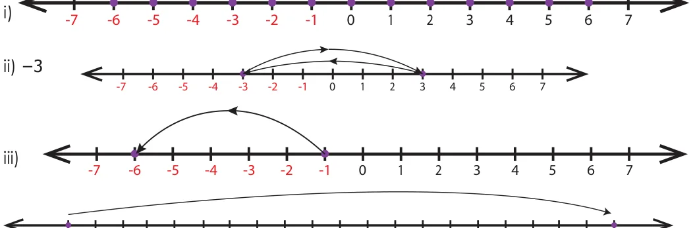</figure>
<p>-7 -6 -5 -4 -3 -2 -1</p>
<p>3.</p>
<p>-10 -9 -8 -7 -6 -5 -4 -3 -2 -1</p>
<p>4.</p>
<figure class="fig wide">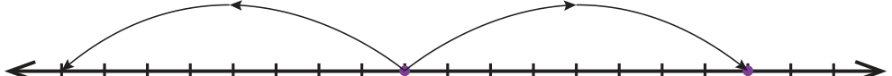</figure>
<p>-14 -13 -12 -11 -10 -9 -8 -7 -6 -5 -4 -3 -2 -1</p>
<ul class="qlist">
<li><span class="mk">5.</span><span class="lt">i) K ( \(- 1) - 4\) iii) 6 ( \(- 2\), \(- 1\), 0, 1, 2, 3) iv) (C,H), (E, J) v) False, 0</span></li>
<li><span class="mk">6.</span><span class="lt">\(- 3\), 7 7. \(- 4\), \(- 1\)</span></li>
<li><span class="mk">8.</span><span class="lt">No, as the number line number extends on both sides without any end, we cannot find the</span></li>
</ul>
<p>smallest ( - ) and the largest (+) number</p>
<ul class="qlist">
<li><span class="mk">9.</span><span class="lt">i) \(- 10 ^{\circ} C\) ii) \(- 5 ^{\circ} C\) iii) \(- 20 ^{\circ} C\) iv) \(- 15 ^{\circ} C\)</span></li>
<li><span class="mk">10.</span><span class="lt">\(S &lt; Q &lt; 0 &lt; R &lt; P\)</span></li>
<li><span class="mk">11.</span><span class="lt">i) 3 ii) \(- 2\) iii) \(- 6\) iv) \(- 1\) v) \(- 5\)</span></li>
<li><span class="mk">vi)</span><span class="lt">\(- 4\) vii) 4 viii) 4 ix) 5 x) 2</span></li>
<li><span class="mk">12.</span><span class="lt">C1: 0, C3: 2, C5: 0, C6: -4, C8: -8, C9: 0</span></li>
<li><span class="mk">13.</span><span class="lt">i) \(+ 45\) ii) 0 iii) \(- 10\) &amp; \(- 20\) iv) False v) the same</span></li>
</ul>
<h3 id="s-chapter-3-perimeter-and-area-exercise-3-1">Chapter 3 Perimeter and Area Exercise 3.1</h3>
<ul class="qlist">
<li><span class="mk">1.</span><span class="lt">i) 26 cm, 40 cm ii) 14 cm, 182 cm iii) 15 cm, 225 cm iv) 12 m, 44 cm v) 5 feet, 18 feet</span></li>
</ul>
<ul class="qlist">
<li><span class="mk">2.</span><span class="lt">i) 24 cm, 36 cm ii) 25 m, 625 cm iii) 7 feet, 28 feet</span></li>
</ul>
<ul class="qlist">
<li><span class="mk">3.</span><span class="lt">i) 400 cm ii) 8 feet iii) 4 m 4. i) 13 m ii) 6 m iii) 8 feet</span></li>
</ul>
<ul class="qlist">
<li><span class="mk">5.</span><span class="lt">i) 500 ii) 2,60,000 iii) 80,00,000</span></li>
<li><span class="mk">6.</span><span class="lt">i) 48 cm, 80 cm ii) 36 cm, 33 cm iii) 150 cm, 380 cm</span></li>
</ul>
<ul class="qlist">
<li><span class="mk">7.</span><span class="lt">20 m, 24 m 8. 32 cm, 64 cm 9. 24 feet, 24 sq. feet</span></li>
</ul>
<ul class="qlist">
<li><span class="mk">10.</span><span class="lt">i) 25 m ii) 27 cm iii) 18 cm</span></li>
<li><span class="mk">11.</span><span class="lt">41 cm, 122 cm 12. 10 m, \(100 m^{2} 13\). 12 cm 14. 250 \(m^{2}\), `11250/- 15. 54 cm</span></li>
<li><span class="mk">16.</span><span class="lt">b) 17. b) less than 60 cm 18. c) 4 times 19. d) 3 times</span></li>
<li><span class="mk">20.</span><span class="lt">c) Both the area &amp; perimeter are changed</span></li>
</ul>
<h3 class="callout-h" id="s-exercise-3-2">Exercise 3.2</h3>
<ul class="qlist">
<li><span class="mk">1.</span><span class="lt">i) 9 cm ii) 12 cm 2. 114 cm</span></li>
<li><span class="mk">3.</span><span class="lt">Rahim, 120 m 4. 57 m, 2451 m 5. `400/- 6. 60 cm</span></li>
</ul>
<ul class="qlist">
<li><span class="mk">7.</span><span class="lt">8 8. 8 cm, 24 cm 9. 12, (1,23), (2,22), (3,21), (4,20), (5,19), (6,18),</span></li>
</ul>
<aside class="sidenote"><p>(7,17), (8,16), (9,15), (10,14), (11,13), (12,12)</p></aside>
<ul class="qlist">
<li><span class="mk">10.</span><span class="lt">Perimeter of square B is twice that of square A</span></li>
<li><span class="mk">11.</span><span class="lt">Area of the new square is reduced to 1/16 times to that of original area</span></li>
<li><span class="mk">12.</span><span class="lt">Square plot by 4 m 13. 102 cm 14. 15.5 sq.units</span></li>
</ul>
<h3 id="s-chapter-4-symmetry-exercise-4-1">Chapter 4 Symmetry Exercise 4.1</h3>
<ul class="qlist">
<li><span class="mk">1.</span><span class="lt">i) P ii) Two iii)Two iv) Two v) Translation</span></li>
<li><span class="mk">2.</span><span class="lt">i) False ii) True iii) False iv) True v) False</span></li>
<li><span class="mk">3.</span><span class="lt">i) d ii) a iii) b iv) c</span></li>
</ul>
<p>4.</p>
<figure class="fig wide">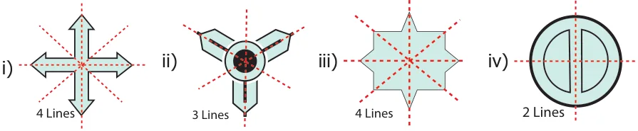</figure>
<ul class="qlist">
<li><span class="mk">5.</span><span class="lt">i) DECODE ii) KICK iii) BED iv) W v) M vi) T</span></li>
</ul>
<figure class="fig wide">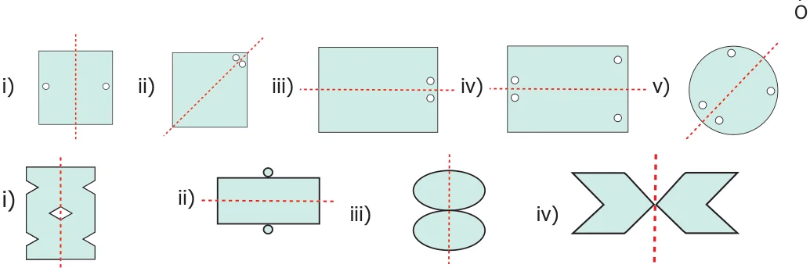</figure>
<p>6.</p>
<p>7.</p>
<ul class="qlist">
<li><span class="mk">8.</span><span class="lt">i) 2 ii) 2 iii) 4 iv) 8 v) 2</span></li>
<li><span class="mk">9.</span><span class="lt">i) 4 ii) 2 iii) 2 iv) 4 v) 4 vi) 2</span></li>
</ul>
<figure class="fig">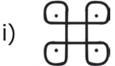</figure>
<figure class="fig">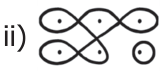</figure>
<figure class="fig">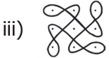</figure>
<ul class="qlist">
<li><span class="mk">10.</span><span class="lt">11. b) P 12. c)</span></li>
<li><span class="mk">13.</span><span class="lt">c) MAM 14. b) 2 15. a) 5</span></li>
</ul>
<h3 class="callout-h" id="s-exercise-4-2">Exercise 4.2</h3>
<ul class="qlist">
<li><span class="mk">1.</span><span class="lt">i) Scalene triangle ii) Isosceles triangle iii) Equilateral triangle</span></li>
<li><span class="mk">2.</span><span class="lt">i) P, N, S, Z ii) I, O, N, X, S, H, Z iii) A, M, E, D, I, K, O, X, H, U, V, W iv) I, O, X, H</span></li>
<li><span class="mk">3.</span><span class="lt">i) 0, 2 ii) 1, 0 iii) 2, 2 iv) 8, 8 v) 1, 0</span></li>
<li><span class="mk">4.</span><span class="lt">5.</span></li>
</ul>
<figure class="fig table-fig wide">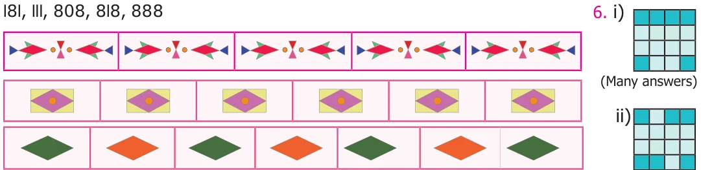</figure>
<p>7.</p>
<figure class="fig wide">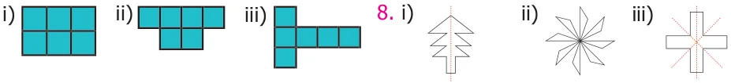</figure>
<p>(Many answers) (Many answers)</p>
<ul class="qlist">
<li><span class="mk">9.</span><span class="lt">i) 10 ii) 10 iii) n, n 10.</span></li>
</ul>
<figure class="fig">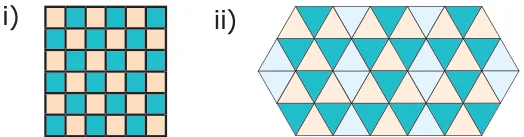</figure>
<p>Chapter 5 Information Processing</p>
<figure class="fig table-fig wide">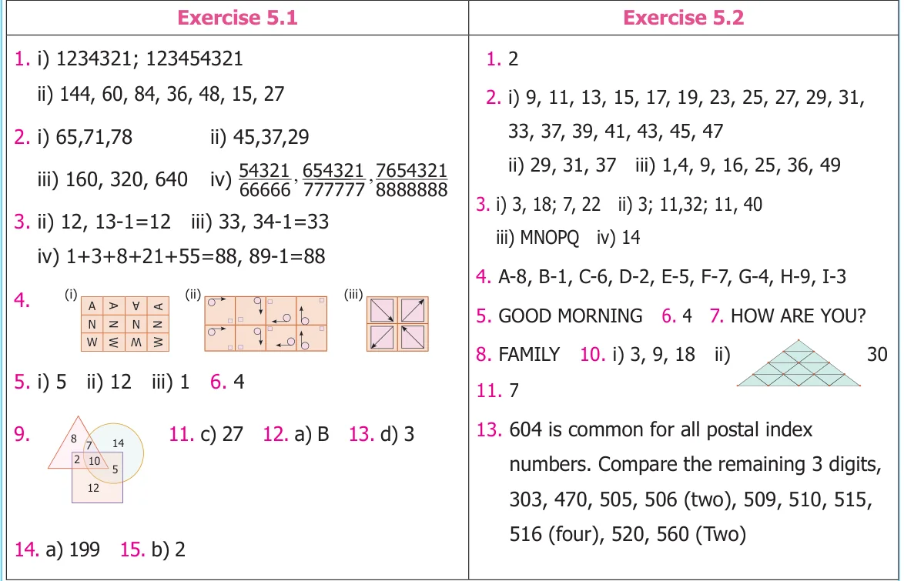</figure>
</article>
<nav class="pager"><a class="" data-nav="prev" href="../../90-appendix/00-front-matter/index.html"><span class="dir">← Previous</span><span class="t">Front Matter</span><span class="ch">Appendix</span></a><a class="nx" data-nav="next" href="../../90-appendix/mathematical-terms/index.html"><span class="dir">Next →</span><span class="t">Mathematical Terms</span><span class="ch">Appendix</span></a></nav>
</main><footer class="site">Generated from the source textbook PDFs · text, figures and exercises belong to their respective publishers.</footer><script defer src="https://cdn.jsdelivr.net/npm/katex@0.16.11/dist/katex.min.js" crossorigin="anonymous"></script>
<script defer src="https://cdn.jsdelivr.net/npm/katex@0.16.11/dist/contrib/auto-render.min.js" crossorigin="anonymous"
  onload="renderMathInElement(document.body,{delimiters:[
    {left:'\\(',right:'\\)',display:false},
    {left:'$$',right:'$$',display:true},
    {left:'\\[',right:'\\]',display:true}],throwOnError:false,ignoredTags:['script','noscript','style','textarea','pre','code']})"></script>
<script src="../../../assets/book.js"></script>
</body>
</html>
